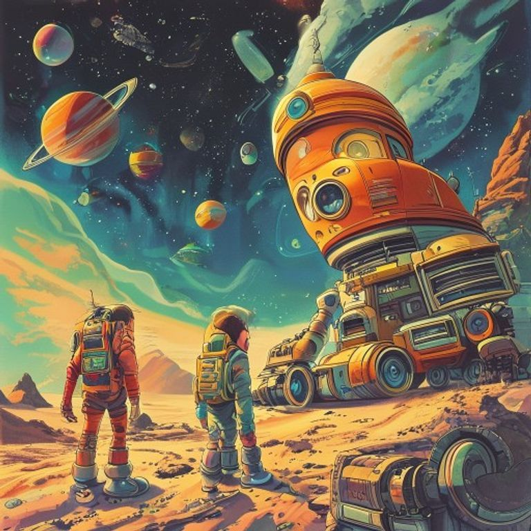

Код Созидания

После того как Шестой модуль застыл в грузовом отсеке «Искры», на корабле воцарился суетливый покой. Это был тот особый вид тишины, когда каждый занят делом, но боится случайно выронить гаечный ключ, чтобы не спугнуть выслеженную удачу.
— Если верить моим датчикам давления, — пробурчал Драгос, стряхивая с бортового патрубка невидимую сажу, — эта древняя штуковина жрёт энергию быстрее, чем мой термоядерный реактор на полном ходу! Кажется, у меня в третьем цилиндре сейчас закипит даже самое стойкое синтетическое масло.
— Не паникуй, огненный ты наш, — задорно отозвался Ветрос, совершая лихой вираж на кресле навигатора. — Термодинамика — наука точная и весьма весёлая. Если где-то энергия убывает, значит, в другом месте она превращается в нечто прекрасное. Например, в ответы на наши бесконечные вопросы!
Аквас приложил сканирующий луч к кристаллическому корпусу Шестого модуля, внимательно изучая пульсирующие графики.
— Ветрос прав, — медленно произнёс Аквас. — Это не просто потребитель мощности, это грандиозный трансформер. Посмотрите на волновые показатели: модуль резонирует с нашими элементарными ядрами. Огонь, Вода, Земля, Воздух и Материя… Мы думали, что Материос — это завершающее звено цепи. Но что, если мы были лишь половиной уравнения?
Материос тихо подошёл ближе. Его сенсорная панель мягко переливалась серебром, отзываясь на вибрацию прибора.
— Я… я снова чувствую эти нити, — тихо произнёс он, и в его голосе больше не было прежней неуверенности. — Помните кристаллическую паутину из Лабиринта? Помните застрявший узел времени и мёртвый Некрополь? Все эти миры не были окончательно разрушены или брошены. Они просто спали, ожидая сигнала. А этот модуль — не шестой элемент. Это… синхронизатор. Ключ зажигания для всей галактической системы.
Террос, до этого напоминавший неподвижную титановую статую, тяжело ступил на металлический пол отсека. От его движения «Искра» слегка вздрогнула всеми шпангоутами.
— Земля под нашими колёсами на Эрадусе была сухой и мёртвой, — проговорил Террос глубоким, как гул тектонических плит, голосом. — Но даже кремний помнит тепло. Если этот модуль — ключ, то в какой замок мы должны его вставить?
— А вот сейчас и проверим! — задорно крикнул Ветрос и с щелчком перевёл тумблер сопряжения в положение «Полный контакт».
Корабль отозвался низкочастотным, бархатным гулом. Это не была аварийная вибрация — так поёт хорошо смазанный, безупречно отлаженный механизм, когда все его шестерёнки наконец встают в родные пазы. Из центра Шестого модуля вырвался не опаляющий луч, а мягкий, пушистый поток изумрудного света. Он плавно обволок всех био-вотчкаров, соединяя их ядра в единую световую цепь.
Драгос от изумления чуть не заглушил свой плазменный двигатель:
— Тысяча дохлых конденсаторов! Моё ядро… оно будто говорит с вашими! Я чувствую прохладу Акваса и скорость Ветроса!
— Это и есть Великий Резонанс, — прошептал Аквас, наблюдая, как на главном объёмном проекторе мостика начинают стремительно оживать старые, казалось бы, навсегда угасшие карты.
Паутина светящихся нитей, которую экипаж прослеживал от заброшенного Маяка через стеклянный Лабиринт и загадочные Врата, вспыхнула на звёздном глобусе «Искры». Но теперь эти энергетические каналы не обрывались в безысходной пустоте! Они пульсировали и тянулись обратно к пройденным планетам, отдавая им накопленный заряд.
На экранах управления один за другим начали вспыхивать датчики дальней связи.
— Принимаю телеметрию с Некрополя! — быстро защёлкал тумблерами Ветрос, и его привычная ирония на мгновение уступила место чистому мальчишескому восторгу. — Ребята, это же фантастика! Серые мёртвые башни металлического города… они начали излучать тепло! Синтетическая атмосфера очищается и наполняется кислородом!
— А что происходит на Эрадусе? — подался вперёд Материос.
Террос внимательно вгляделся в поступающие графики:
— Глубокие раны каньонов затягиваются. Подземные источники пробивают базальт. Планета пробуждается. Мы — не просто бродячие исследователи… Наш экипаж — это главная наладочная бригада древней Галактики!
Драгос гордо расправил блестящий спойлер и выпустил из патрубка колечко чистого пара:
— Я всегда говорил, что вовремя смазанный поршень и честная работа спасут любую систему! А вы всё: «философия, высокие сферы»…
Но торжественный момент неожиданно прервал новый, ни на что не похожий сигнал. Из самого центра ожившей паутины, из сектора, который на всех картах считался абсолютно пустым, пробился сверхмощный импульс. Это была чёткая цифровая последовательность — древняя кодовая фраза Первых Архитекторов.
Аквас медленно перевёл взгляд с экрана расшифровщика на своих товарищей. Голос его прозвучал необычайно тихо:
— Сеть не просто включилась… Она отправила отчёт о нашей работе. И прямо сейчас мы получили ответный адрес.
В центре голографической сферы зажглась точка. Это была не планета и не звезда, а колоссальный искусственный мир в форме сферы Дайсона, окружённый миллионами застывших био-кораблей, точно таких же, как их «Искра».
И над пультами управления вспыхнул единственный строгий вопрос, переведённый бортовым компьютером:
«Первичный контур Галактики восстановлен. Готовы ли био-операторы к активации Второго Этапа — Великому Объединению?»